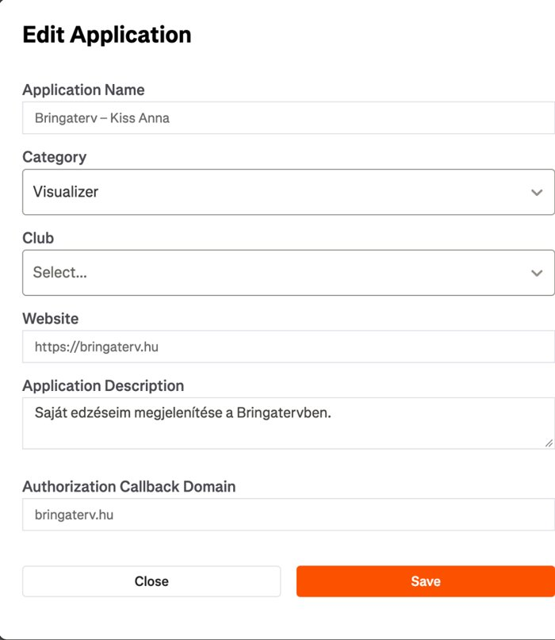
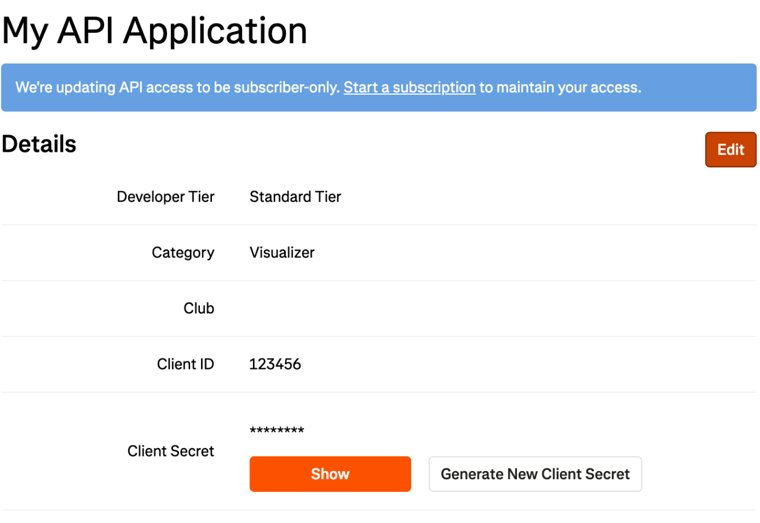
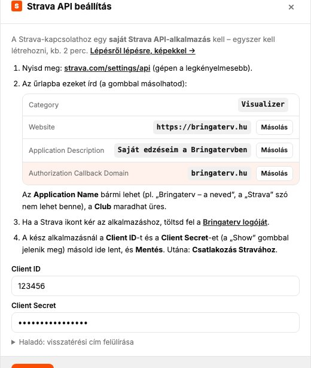

Súgó és kézikönyv
A Bringaterv útvonaltervező és edzésnapló kerékpárosoknak, futóknak és túrázóknak – saját szerveren. Ez a leírás menüpontonként végigvezet a funkciókon. A keresővel bármire rákereshetsz.
Áttekintés – a felület
Az alkalmazás hat fő részből áll, amelyek között a bal oldali sávval (telefonon az alsó navigációval) válthatsz:
| Fül | Mire való? |
|---|---|
| Kezdő | Indításkor ez nyílik: gyors műveletek (új útvonal, GPX / FIT betöltése, Könyvtár, Közösségi utak, Statisztikák), a legutóbbi edzésed térképpel és egy kattintásos Elemzéssel, a mai / holnapi tekerési időjárás szél-ajánlással, a mentett terveid, összesítő a céljaiddal, forma (Eddington-számmal, sorozattal), „egy éve ezen a napon” emlék és aktivitás-naptár. |
| Tervezés | Új útvonal tervezése a térképen: pontok, tervezési módok, becsült idő, szint- és szélelemzés, mentés. |
| Elemzés | Egy rögzített edzés (GPX / FIT) részletes elemzése: adatok, színezett térkép, diagramok, pulzuszónák. |
| Könyvtár | Mentett útvonalak és edzések, szűrés, importálás (fájl, Strava, Garmin, OnelapFit, Wahoo, Polar), megosztás. |
| Felszerelés | Bringák (fotóval), alkatrészek, karbantartási emlékeztetők km / üzemóra / nap alapján, szervizfigyelmeztetés és napló – lásd Felszerelés. |
| Statok | Összesítők, havi statisztika, személyes rekordok, Eddington-szám, edzésterhelés, hőtérkép. |
A jobb felső sarokban a ☀ / ☾ gomb a világos/sötét témát váltja, a ☰ menüben érhető el a Beállítások, az Egérműveletek és billentyűparancsok, a Telepítés appként, ez a súgó, az Adatkezelés és a Kijelentkezés (adminnak az Admin felület is).
Súgó („i”) gombok
A legtöbb beállítás és szakasz mellett van egy kis ⓘ gomb. Koppints rá: rövid magyarázat nyílik az adott funkcióról. Újabb koppintás, a dobozon kívüli koppintás vagy az Esc bezárja.
Mobil nézet
Telefonon (és fekvő telefonon) saját elrendezés jelenik meg: teljes képernyős térkép, alul a hat fül, a panel tartalma pedig alulról felhúzható (a lap tetején mindig a legfontosabb: tervezésnél kereső, számok, mód és eszközök; elemzésnél a fő számok és a színezés). A panel tetején lévő fogantyúval négy magasság között válthatsz (koppintással léptet, húzással szabadon állítható). iPaden álló és fekvő helyzetben az asztali elrendezés látszik.
Kezdőlap
- Gyors műveletek – egy sorban: Új útvonal, GPX / FIT betöltése (Elemzés), Könyvtár (az elemek számával), Közösségi utak, Statisztikák. Telefonon vízszintesen görgethető.
- Legutóbbi edzés – térképes előnézet, a fő számok (táv, idő, emelkedés, átlag), alattuk pulzus, teljesítmény, terhelés; az Elemzés gombbal azonnal megnyílik, a Tervezés gombbal útvonal lesz belőle.
- Mai / holnapi tekerés – az Open-Meteo előrejelzése a legutóbbi edzésed rajtjánál: hőmérséklet, szélirány és -erősség, lökések, eső, órás sáv (zöld = tekerésre jó idő), és egy ajánlás – pl. „indulj szél ellen, hazafelé hátszeled lesz”. Délután 3 után már a holnapi napot mutatja.
- Mentett terveid – a három legutóbbi tervezett útvonal kis térképpel; kattintásra betöltődik a Tervezésbe.
- Összesítő és célok – e hét, a hónap és az év kilométerei, edzésszáma, szintje, ideje; alatta a céljaid csíkja (Célok gomb: heti táv, éves táv, éves szint – üresen automatikus cél).
- Forma – fittség, fáradtság, forma, Eddington-szám és hány hete edzel megszakítás nélkül; a Részletek a Statok edzésterhelés nézetébe visz.
- Egy éve ezen a napon – ha egy éve (±3 nap) volt edzésed, egy kis emlékkártya mutatja, egy kattintással megnyitható.
- Aktivitás – naptár az elmúlt évről (telefonon az utolsó hetekről), a szín a napi km-t jelzi.
Telepítés appként (iPhone, iPad, Android)
A Bringaterv App Store nélkül, appként telepíthető: saját ikonja lesz, teljes képernyőn, böngészősáv nélkül fut, és frissítéskor magától az új verziót tölti be.
iPhone / iPad
- Nyisd meg a Bringaterv címét Safariban.
- Koppints a Megosztás gombra (négyzet felfelé mutató nyíllal) – iPhone-on alul középen, iPaden a címsor jobb oldalán.
- Válaszd a Főképernyőhöz adás pontot, majd Hozzáadás.
- Indítsd az új ikonról, és jelentkezz be (az app a Safaritól külön tárolja az adatait, ezért egyszer újra kell).
Android / asztali Chrome, Edge
☰ menü → Telepítés appként (vagy a böngésző menüjében: Alkalmazás telepítése).
http:// címen is telepíthető, de értesítést nem tud kapni.Tervezés
Pontok hozzáadása
- Kattints (koppints) a térképre – új útvonalpont kerül az útvonal végére. Az útvonal automatikusan utakon vezet a pontok között.
- Hely keresése – írj be egy település- vagy utcanevet, és válassz a találatok közül.
- Saját hely (célkereszt gomb a kereső mellett) – a telefonod / géped helyzetéhez ugrik.
- Közbeszúrás – kattints magára az útvonal vonalára: oda kerül egy új pont a két meglévő közé.
- Pont mozgatása – húzd a jelölőt a térképen; a neve automatikusan frissül.
Útvonal-javaslat
Ha nem akarsz pontonként tervezni, a Bringaterv ad 3 kész útvonalat a kért távra. Üres tervezésnél a pontlista alatt (telefonon a kereső alatt) az Útvonal-javaslat sorral, egyébként az Útvonal ⋯ menüjéből nyílik.
- Rajt: bökj a térképre, vagy használd a Saját helyem gombot. Alatta megjelenik a település neve, a térképen zöld pont és egy halvány körzet.
- Kör vagy A → B: körnél az útvonal visszaér a rajthoz. A → B-nél a következő bökés a célt állítja be (a Rajt / Cél sorra kattintva válthatsz, melyiket módosítod). Ha a cél nagyon közel van a rajthoz, körszerű útvonalat kapsz, ami a célnál ér véget.
- Táv vagy idő: a „Táv | Idő” váltóval km helyett időt is megadhatsz (fél–8 óra) – a Beállításokban megadott tervezési sebességgel számolja át km-re.
- Tevékenység: Kerékpár vagy Gyalog – a tervező aktuális módjával indul (Séta / Túra módból gyalogos javaslatot ad). Gyalog a táv 2–40 km.
- Burkolat kerékpárral (Aszfalt / Gravel / Vegyes), gyalog Terep (Séta / Túra / Vegyes), és szint (Sík / Dombos / Bármi). Túránál a javaslat a jelzett turistautakat keresi, a kártyán látszik, hány százaléka halad jelzett úton.
- További beállítások (lenyitható): irány (É / K / D / Ny – a kör arra induljon), kerékpárral forgalom (főutak kerülése vagy kerékpárút előnyben), és a leghosszabb emelkedő felső határa (30 / 60 / 100 m egybefüggő emelkedés). Gyalog a főutakat mindig kerüli.
- Javaslatok – néhány másodperc–fél perc, a számolás állása látszik.
Kérés szöveggel (AI): ha az AI elérhető a fiókodban, a panel tetején leírhatod, milyen túrát szeretnél – pl. „másfél órás gravel kör Szentendréről, kevés forgalommal, nagy emelkedő nélkül”. A Kitöltés AI-val beállítja a fentieket, megkeresi a helyet, és rögtön tervez; a kártyák felett látod, hogyan értette, és azt is, mit nem tud még figyelembe venni (pl. kávézó érintése). A napi AI-keretedbe számít.
Az eredmény 3 kártya (a Több javaslat gombbal 6): név (a legtávolabbi vagy a félúton érintett település), táv, szint, az aszfalt és a burkolatlan rész aránya és egy burkolatsáv. A térképen a kiválasztott élénken, a többi halványan látszik – kártyára vagy vonalra kattintva választasz. Az Ezt választom szerkeszthető tervként tölti be (a burkolathoz illő tervezési móddal), utána pontonként tovább alakíthatod. Ha már volt útvonalad, előtte rákérdez.
Ha a javaslatok után átállítod a burkolatot, a szintet, a távot, a kör / A → B-t vagy áthelyezed a rajtot, automatikusan újratervez (a régi kártyák addig halványan látszanak). A kiválasztott kártyán a Hasonló, de… gombokkal egy kattintással kérhetsz rövidebb, hosszabb, kevesebb szintes, másik irányú, aszfaltosabb vagy kisebb forgalmú változatot.
Ha egy javaslat nem felel meg teljesen a kérésnek (pl. van benne nagyobb emelkedő, burkolatlan vagy főúti szakasz), a kártya jelzi; ha a környéken egyik sem felel meg, erről külön tájékoztat.
Hogyan készül?Az útvonalakat a BRouter rajzolja (OpenStreetMap-adatokból, alapból a Bringaterv saját szerverén), a Bringaterv csak a segédpontokat helyezi el, és a legjobbakat választja ki: a táv-eltérés, a burkolat, a szint, a leghosszabb egybefüggő emelkedő, a főúti arány és a visszafordulás alapján. A zsákutcába eső segédpontokat a tüske tövébe helyezi át, hogy ne legyen oda-vissza szakasz.
Az útvonalpontok listája
- A pontokat a bal oldali fogantyúval (⋮⋮) húzva rendezheted át.
- A × törli a pontot. A térképen a jelölőre kattintva felugró ablakban átnevezheted, megjegyzést írhatsz hozzá, vagy törölheted.
- A pontok között a szakasz hossza látszik; a színes pötty az adott szakasz tervezési módja – rákattintva szakaszonként átállíthatod (a tevékenységen belül: kerékpárnál Aszfalt / Gravel / MTB, gyalog Séta / Túra).
- Az utolsó pont célzászlóval (sakktábla) jelenik meg.
- A pontok alatt a teljes táv, a becsült idő, az emelkedő és az ereszkedő látható.
Tervezési módok (útvonaltípusok)
A tervezési mód határozza meg, milyen utakon vezet az útvonal, és milyen alapsebességgel számol a becsült idő. Az útvonaltervezést a BRouter végzi (OpenStreetMap-adatok alapján) – alapból a Bringaterv saját szerverén, tartalékként a nyilvános brouter.de-n.
| Mód | Mit keres? | Alapsebesség |
|---|---|---|
| Aszfalt | Kerékpárutak és szilárd burkolatú utak, gyors haladás (BRouter „fastbike” profil). | 22 km/h |
| Gravel | Földutak, murva, mezőgazdasági utak is. | 18 km/h |
| MTB | Erdei ösvények, terep. | 12 km/h |
| Séta | Gyalog: utcák, járdák, parkok, könnyű földutak – nehéz ösvényre nem visz, a turistajelzés mindegy. | 5 km/h |
| Túra | Gyalog: a jelzett turistautak előnyben, ösvények is (legfeljebb közepesen nehéz hegyi ösvény). | 5 km/h |
A módok két tevékenységbe tartoznak: Kerékpár (Aszfalt, Gravel, MTB) és Gyalog (Séta, Túra). A két gyalogos mód a BRouter „hiking-mountain” profilját használja eltérő beállítással.
Vegyes mód: egy útvonalon belül szakaszonként más-más mód is lehet, de csak a tevékenységen belül – bringás útvonalon nincs gyalogos szakasz, és fordítva. A pontlistában a szakasz melletti színes pöttyre koppintva állítható; a térképen a szakaszok a módjuk színével jelennek meg. Ha a tervezési módot a másik tevékenységre váltod (pl. MTB-ről Túrára), a szakaszonkénti módok visszaállnak az alapra.
Turistajelzések: a térképstílus-választóban kapcsolható réteg, és gyalogos módban egy adott jelzés követése is beállítható – lásd Turistajelzések és jelzéskövetés.
Az alapsebességek a Beállítások → Tervezési beállítások alatt módosíthatók.
A tervezés oldalsávja
- Útvonal ⋯ menü (a cím mellett): Útvonal-javaslat, GPX importálása, Köztes pontok elrejtése / megjelenítése, Irány megfordítása, Oda-vissza út, Mentés / megosztás, Útvonal törlése.
- Köztes pontok elrejtése: sok útpontnál (pl. betöltött GPX-nél) a számozott jelölők eltakarják a térképet és a színezést – a térkép jobb felső sarkában lévő áthúzott tű gombbal (vagy a ⋯ menüben) eltüntetheted őket; a rajt, a cél és az útvonal látszik, a pontok a listában továbbra is szerkeszthetők. A beállítást a böngésző megjegyzi.
- Pontok – mellette a tervezési mód választója (Kerékpár: Aszfalt / Gravel / MTB, Gyalog: Séta / Túra), alatta a pontlista.
- A lista alatt a kereső, a Körtúra kapcsoló és a ⚙ gomb a ritkábban állított beállításokkal (lásd lent).
- Útvonal színezése – egy választóval: Nincs, Szintprofil (meredekség), Szélelemzés, Burkolat. Egyszerre egy lehet aktív.
| ⚙ beállítás | Hatás |
|---|---|
| Útra illesztés | Bekapcsolva a pontokat utakon köti össze; kikapcsolva légvonalban (pl. úttalan terepen). |
| Szakasz információk | A statok (táv, idő, szint) mutatása a pontok alatt. |
| Szintadat / szélhatás az időbecsléshez | Lásd Becsült idő. |
| Futó animáció az útvonalon | Apró fehér jelek futnak végig az útvonalon a haladás irányában (tervezésnél és elemzésnél is). Ha a rendszerben be van kapcsolva a mozgás csökkentése, nem mozog. |
| Útirány-nyilak | Kis nyilak ~1,5 km-enként a haladási iránnyal. |
| Automatikus zoom az útvonalra | Bekapcsolva új pont után a térkép a teljes útvonalra nagyít; kikapcsolva a nagyítás és a térképrészlet marad (a teljes útvonalat a „Teljes útvonal” gomb mutatja). |
| Csak jelzett turistaúton | Séta és Túra módban: a jelzett turistautak erős előnyben – lásd Turistajelzések. |
Ugyanezek a ☰ → Beállítások alatt is megvannak (a két hely együtt változik). Telefonon a ⚙ helyett „Beállítások” gomb van, és a panel a lapon belül nyílik le.
A GPX köztes pontok kapcsoló (fájlbetöltéskor a köztes pontok útvonalponttá alakítása) a Beállítások → Tervezési beállítások alatt van.
Navigáció
A megtervezett útvonalon a Bringaterv végigvezet – gyalog és kerékpárral is. Béta funkció, alapból ki van kapcsolva: a Beállítások → Navigáció (béta) alatt kapcsolható be (eszközönként). Utána a térkép jobb felső sarkában a Navigáció gombbal indul (akkor látszik, ha van megtervezett útvonal). A böngésző kéri a helymeghatározás engedélyezését.
- Indulás: az első GPS-jel után eldönti, hol vagy. Az útvonal elején rögtön indul; ha a közepén vagy, megkérdezi, innen folytatod-e vagy az elejéről – ahol az út többször is elhalad (kör, oda-vissza), azt is, melyik részénél tartasz (az épp követett irány az első). Ha messze vagy az úttól, felajánlja, hogy a legközelebbi ponthoz vagy a rajthoz vezet (kék pöttyözött bekötő szakasz), vagy csak megmutatja az utat.
- Félbehagyott út: ha egy navigációt a cél előtt befejezel, a haladást megjegyzi (14 napig, ezen az eszközön). Ugyanennek az útnak a következő indításakor megkérdezi: „Folytatod onnan?”.
- Szimuláció otthon: ha a cím végére
?navsimkerül (pl.…/index.html?navsim), a navigációban megjelenik a Próba gomb, ami a tervezési sebesség háromszorosával végigmegy az útvonalon – így hely nélkül is kipróbálható.?navsim=5:400: az 5. km-nél, 400 m-re északra indul (a „Honnan folytatod?” és a bekötés kipróbálásához). - Felül a következő teendő: nyíl, táv és utasítás („200 m múlva balra”, „a körforgalomból a 2. kijáraton”, jelzéskövetésnél „a P jelzésen tovább”), alatta a rákövetkező.
- Alul a hátralévő táv, a várható érkezés, a hátralévő emelkedő és a sebesség. Az érkezést az első percekben a tervezési sebességgel, utána a valós tempóddal számolja.
- Hang: a telefon magyarul felolvassa az utasításokat (gyalog kb. 70 és 15 m-rel előtte, kerékpárral a sebességhez igazítva korábban). A Beállításokban választható beszéd, csak hangjelzés és rezgés (egy csippanás előre, kettő a kanyarnál, mély hármas a letérésnél) vagy csak rezgés, és ott a hang is kiválasztható: Berta (női) vagy Imre (férfi) beépített, természetes hang, amely internet nélkül is szól (első használatkor ~1,5 MB töltődik le), vagy a telefon saját felolvasója (jobb minőségű magyar hang a telefon beállításaiban tölthető le – iPhone: Kisegítő lehetőségek → Felolvasott tartalom → Hangok → Magyar). Navigáció közben a Hang gombbal az adott útra némítható.
- Letérés: ha az útvonaltól gyalog 40, kerékpárral 50 m-nél messzebb kerülsz, rezeg, szól, és piros szaggatott vonal mutatja az utat vissza. A megtett rész szürkén látszik.
- Követés: a térkép veled mozog; ha elhúzod, megáll, a Követés gomb visz vissza.
- Befejezés gomb: vége a navigációnak. A célnál magától jelez („Megérkeztél”).
Fontos: a böngésző csak akkor ad helyet, ha az alkalmazás előtérben van és a képernyő be van kapcsolva – zárolt képernyővel vagy háttérbe téve a navigáció megáll. A képernyőt a navigáció ébren tartja (ha a telefon engedi). Hosszabb útra vigyél powerbankot. Zsebben lévő telefonnal vagy egész napos túrára megbízhatóbb a GPX exportja Garmin órára vagy navigációs appba (OsmAnd, Locus Map).
Turistajelzések és jelzéskövetés
Gyalogos módban (Séta, Túra) a tervezés a jelzett turistautakra épülhet – úgy, mint egy turistatérképen: „Mátraházáról a piros sávon fel a Kékesre, onnan a kék háromszögön le Mátrafüredre”. Az adatok az OpenStreetMap túraútvonalaiból jönnek (a Waymarked Trails szolgáltatáson át), a magyar jelzésekkel (kék sáv, piros kereszt, sárga kör…).
- Turistajelzések réteg: a térkép jobb felső sarkában, a térképstílus-választóban kapcsolható. A jelzett utakat színes vonallal és a jelzés képével mutatja bármelyik térkép fölött. Amíg nem állítod át, Séta és Túra módban magától bekapcsol.
- Csak jelzett turistaúton (a tervezés ⚙ paneljében, gyalogos módban): a tervező a jelzett utakat erősen előnyben részesíti, és csak ott tér le róluk, ahol muszáj – jellemzően a rajthoz és a célhoz vezető bekötésnél. Nem egy bizonyos jelzést követ, hanem bármelyiket.
- Jelzés követése a következő pontig (a pont ablakában): azok a jelzések jelennek meg, amelyek ezen a ponton és a következőn is átmennek. Egyet kiválasztva a szakasz pontosan azon a jelzésen vezet; a pontlistában a pont mellett a jelzés képe látszik. A Nincs visszaállítja a sima tervezést. Ha a pontot később elhúzod a jelzésről, a szakasz a tervezési mód szerint tervez tovább.
- Jelzések a térkép egy pontján: asztalon jobb gombbal, telefonon hosszan nyomva a térképre ablak nyílik az ott futó jelzésekkel. Egyre koppintva kiemelődik a térképen, és:
- Pont ide, ezen a jelzésen – új pont a jelzett útra illesztve; az előző ponttól (ha az is a jelzésen van) a jelzésen vezet az út. Így pontról pontra „végigkattinthatod” a túrát.
- Egész jelzés tervként – a jelzés elejétől a végéig, szerkeszthető tervként (120 km-ig; a hosszabbakra, pl. a Kéktúrára tegyél pontokat).
- Mutasd egészben – a teljes jelzés a térképen.
Ha a jelzés nem jelenik meg a pontnál: a pontnak kb. 100 m-en belül kell lennie a jelzett úttól – húzd rá a vonalra, vagy használd a jobb gombos „Pont ide, ezen a jelzésen”-t. Kerékpáros módban a jelzéskövetés nem érhető el (váltáskor megszűnik).
Burkolat
Az Útvonal színezése → Burkolat megmutatja, milyen utakon vezet az útvonal: Aszfalt, Murva, Földút, Ösvény – arányban (sáv) és km-ben, a térképen pedig a szakaszok burkolat szerint színeződnek (ugyanazokkal a színekkel, mint a tervezési módok pöttyei). Tervezett útvonalnál az adat az útvonaltervezővel együtt érkezik, azonnal; importált GPX-nél az OpenStreetMapből kérdezi le (néhány másodperc). Ahol a térképen nincs megadva burkolat, a közutat aszfaltnak veszi.
Becsült idő
- Alapja a táv és a szakasz tervezési módjának alapsebessége.
- Szintadat az időbecsléshez – bekapcsolva az emelkedők lassítanak, a lejtők gyorsítanak (Naismith-szabály szerint).
- Szélhatás az időbecsléshez – ha lefuttattad a szélelemzést, a szembeszél lassító és a hátszél gyorsító hatását is beszámítja (a kerékpáros profil tömege és légellenállása alapján).
Az eszköztár (a térkép alján)
| Gomb | Funkció |
|---|---|
| ⋮⋮ fogantyú | Asztalon húzással áthelyezhető, kattintásra kis gombbá csukható össze (újabb kattintásra kinyílik). |
| Tervezési mód | Az új szakaszok alapértelmezett módja (Aszfalt / Gravel / MTB / Séta / Túra). |
| Helykeresés | A kereső megnyitása. |
| Import | GPX / FIT fájl betöltése. |
| Megfordítás | Az útvonal irányának megfordítása. |
| Visszaút hozzáadása | A kezdőpontba vezető visszautat tervez a végére. |
| Oda-vissza útvonal | Ugyanazon az úton visszafelé is (tükrözött útvonal). |
| Visszavonás / Újra | Az utolsó módosítások visszavonása / ismétlése. |
| Törlés | Az egész tervezett útvonal törlése (megerősítést kér). |
| Szintprofil | A szintprofil diagram megnyitása. |
| Szélelemzés | Szél-előrejelzés az útvonalra (lásd lent). |
| Mentés | Mentés a könyvtárba, GPX letöltés, megosztás, PDF. |
Az eszköztár elemeinek sorrendje és láthatósága a Beállítások → Eszköztár sorrend alatt állítható.
Szintprofil
A diagram az útvonal magasságát mutatja a táv függvényében. A Szintprofil kapcsolóval a térképen a meredekség szerint színeződik az útvonal (zöld = lejtő, szürke = sík, piros = emelkedő); a jelmagyarázat a térkép bal felső sarkában látszik. A diagramon mozgatott egér vagy ujj a térképen is mutatja a pontot.
Útvonalpont
Egy útvonalpontra kattintva ablak nyílik: rajttól mért táv (becsült idővel és emelkedéssel), magasság, meredekség, célig hátralévő táv és koordináták (másolható). Itt nevezheted át a pontot, írhatsz hozzá megjegyzést, állíthatod a következő szakasz tervezési módját, és törölheted a pontot. A célpontnál az Oda-vissza is innen indítható.
Körtúra: a rajt (és a cél) ablakában, illetve a pontlista alatti Körtúra kapcsolóval az útvonal mindig visszaér a rajthoz. Bekapcsolva a végére kerül a rajt, az új pontok a visszaút elé szúródnak be, a rajt elhúzásakor a cél is vele mozog, a rajt törlésekor pedig a következő pont lesz a rajt és a cél. Kikapcsolva a visszaút lekerül.
Körtúra importált nyomvonalnál (pl. Elemzés → Tervezés ez alapján): a nyomvonal megmarad. Ha a cél a rajttól 300 m-en belül van, a cél a rajtra kerül egy rövid összekötővel; ha messzebb, csak a visszautat tervezi hozzá. Ha csak rajt és cél volt, a nyomvonal rajttól legtávolabbi pontja fordulópontként bekerül. Kikapcsolva visszaáll az eredeti.
Körtúra más ponttól: ha az útvonal kör (a cél a rajttól 300 m-en belül van), bármelyik köztes pont ablakában ott a Rajt ide gomb – a kör ettől a ponttól indul és ide ér vissza, az útvonal ugyanaz marad. Ha a kívánt helyen nincs pont, kattints az útvonalra (köztes pontot szúr be), majd annak ablakában válaszd a Rajt ide-t. Az irányt a Megfordítás gombbal válthatod.
Szélelemzés
- Nyisd meg a szélelemzést (eszköztár, vagy az oldalsávban Útvonal színezése → Szélelemzés – ilyenkor rögtön lenyílik az indulási idő és a sebesség).
- Add meg az indulás idejét (legfeljebb 7 nappal előre).
- Az Open-Meteo előrejelzéséből minden szakaszra kiszámolja, mikor érsz oda, és ott épp honnan fúj a szél.
Eredmény: hátszél / oldalszél / szembeszél arány km-ben és százalékban, szegmenslista, időjárás, és a térképen szél szerinti színezés (zöld = hátszél, sárga = oldalszél, piros = szembeszél). A szél a többi diagramhoz hasonló grafikonon is megjelenik (szélerősség a táv mentén, irány szerint színezve); a szakaszok részletes listája lenyitható. A szélszínezés és a szintprofil-színezés kizárja egymást.
GPX importálása tervezéshez
Egy meglévő GPX-útvonalat szerkeszthetővé tehetsz (Útvonal ⋯ menü → GPX importálása…). A Bringatervben tervezett és mentett útvonal (a könyvtárból) ablak nélkül, a mentett tervezési módokkal azonnal betöltődik. Más útvonalnál egy előnézet jelenik meg:
- Burkolat vizsgálata – az útvonal mentén lekérdezi az útburkolatot az OpenStreetMap nyílt, közösségi térképéből, és szakaszonként automatikusan beállítja a tervezési módot (aszfalt / gravel / MTB). Az eredmény eltárolódik: a közösségi útvonalaknál és a már egyszer megvizsgált saját útvonalaknál azonnal látszik („Tárolt burkolat-vizsgálat”), az Újravizsgálat csak kérésre fut. Ha a térképadat-szerver épp túlterhelt, kicsit később próbáld újra.
- Fordulópontok rögzítése – a legfontosabb kanyarokat útvonalpontként rögzíti, hogy módváltáskor az útvonal az eredeti nyomvonalon maradjon (különben rövidebb utat is választhat).
- Betöltés – gyors betöltés vizsgálat nélkül, a beállított móddal. A burkolat vizsgálata után két gomb közül választhatsz: Csak betöltés (a vizsgálat eredménye nélkül) vagy Betöltés burkolat szerint (a szakaszok a vizsgálat szerinti tervezési móddal töltődnek be).
Mentés, letöltés
A Mentés ablakban: név, típus, leírás → Mentés a könyvtárba. A leírás mellett az ✨ AI-leírás gomb (ha az AI elérhető a fiókodban) a nyomvonalból ír rövid leírást: melyik megyében van, honnan hová, mely településeken át, milyen a burkolat (aszfalt / vegyes / murvás / földutas) és a terep (sík / dombos / hegyes) – a napi AI-keretből számít, és a meglévő leírás tényeit megtartja; GPX letöltés (fájlnév módosítható); Megosztás (kép, PDF, link – lásd Megosztás). A Küldés Garminra / Küldés OnelapFitre gomb (ha a kapcsolat be van állítva) az útvonalat egyben a könyvtárba menti és az eszközre küldi; a végén felugró ablak mutatja, sikerült-e. Ugyanez a könyvtárból is megy.
Elemzés
Edzés betöltése
- Az Elemzés fülön a betöltés gombbal, a Könyvtár → Import → GPX / FIT fájlból menüvel, vagy egyszerűen húzd a fájlt bárhová az ablakba (asztalon).
- Támogatott: GPX és FIT (Garmin, Wahoo, Bryton, Hammerhead, Magene…). FIT esetén az eredeti fájl is megőrződik a könyvtárban.
- Könyvtárból: kattints egy edzés kártyájára.
Adatok
Felül az edzés neve, sportja és ideje, mellette a ⋯ menü (GPX letöltése, Megosztás / PDF, a trackpontok száma, Bezárás). Alatta a négy fő szám: táv, idő (mozgási idő, ha van), átlagsebesség, emelkedés (mellette halványan az ereszkedés, pl. „· 810 m ↓”). Alattuk egy szürke sávban a kalória (forrással – kattintásra az összevetés) és pulzusnál a TRIMP / Edwards-pont, majd egy Átlag | Max táblázat: sebesség, pulzus, kadencia, teljesítmény, hőmérséklet, teljes idő. A pontozottan aláhúzott feliratok fölé állva rövid magyarázat jelenik meg (mi a TRIMP, honnan a kalória, mit jelent a mozgásidő…).
Kalória-összevetés: a „Kalória (forrás) … ›” sorra (telefonon a Kalória kártyára) kattintva egymás mellett látod a számításokat: a rögzítő eszköz / szolgáltatás saját értékét (Strava, Garmin, OnelapFit, Wahoo, Polar, vagy a FIT-fájlban lévő érték), a teljesítményből számoltat (wattmérővel a legpontosabb: a pedálmunka kJ-ban ≈ kcal), a pulzusból számoltat (Keytel-képlet az életkorod, nemed és testsúlyod alapján) és a becslést sebességből, szintből és testsúlyból. A kártya a legmegbízhatóbbat mutatja (eszköz → teljesítmény → pulzus → becslés), mellette az eltérés százalékban. A pulzus alapú érték kalibrálódik: ha legalább 3 olyan edzésed van, ahol wattmérő és pulzusmérő is volt, ezekből személyes szorzót számol. A Strava wattmérő nélkül becsült teljesítménye ebbe nem számít bele.
A térképen az útvonal fölé húzva az egeret egy buborék mutatja az adott pont sebességét, pulzusát, kadenciáját, teljesítményét és magasságát.
Térkép színezése
- Adatpanelek (gépen a bal oldalon, adatonként egy lenyíló sor – csak amihez az edzésben van adat): Sebesség, Kadencia, Pulzus – zónák, Teljesítmény, Hőmérséklet, Szintprofil. A fejlécben a grafikon-ikon nyitja a grafikont, a kapcsoló színezi a térképet (egyszerre egy színezés lehet bekapcsolva). A címre vagy a nyílra kattintva lenyílik: a zónák színnel, tartománnyal, idővel (lejtésnél távval) és százalékkal – a térkép sarkában ugyanez a jelmagyarázat. Telefonon a Térkép színezése és a Grafikonok gombsor.
- Telefonon: a Térkép színezése gombsor (egyszerre egy), alatta a zónaeloszlás-sáv, és a Grafikonok gombsor (több grafikon is lehet nyitva egymás alatt).
- Pulzusnál a pulzuszónák (5 vagy 7 zóna, a beállítás szerint), sebességnél, kadenciánál és teljesítménynél az adatzónák, hőmérsékletnél hidegtől melegig 7 sáv, lejtésnél emelkedő / sík / lejtő sávok.
- A színskála a térkép sarkában is megjelenik (koppintásra összecsukható).
A sebesség-, kadencia- és teljesítménysávok a Beállítások → Adatzónák alatt, a pulzuszónák az Elemzési beállítások alatt állíthatók.
Diagramok
Szintprofil, sebesség, pulzus, kadencia, teljesítmény és szél – mind egységes kinézetű. Fejlécük a legfontosabb számokat mutatja (szintprofilnál táv, becsült idő, emelkedés, ereszkedés, legmagasabb pont, nehézség és tempó; a többinél átlag és maximum; a teljesítménynél Átlag, NP (normalizált teljesítmény), Max, Munka (kJ) és W/kg – a testsúly a kerékpáros profilból). A teljesítmény-grafikonon a Nyers / 10 mp / 30 mp gombbal simíthatod a vonalat (a wattmérő másodpercenként erősen ugrál); a maximum mindig a pontos, simítás nélküli csúcs. A hőmérséklet-grafikon (ha az eszköz mért hőmérsékletet: Garmin, Magene, Wahoo…) átlagot, legalacsonyabb és legmagasabb értéket mutat; a vonal 60 mp-es simítással látszik, zónaszín módban hidegtől (kék) melegig (piros) színezve. A Zónaszín gombbal a vonal a zónák / lejtés szerint színeződik, ilyenkor jelmagyarázat is megjelenik. Az egérrel (telefonon az ujjaddal vízszintesen húzva) mozogva minden nyitott diagramon és a térképen is ugyanaz a pont látszik; a címke csak azon a diagramon jelenik meg, amelyiken mozogsz. Tervezésnél a rajt (A), a cél (B) és a közbenső útvonalpontok is jelölve vannak. Függőlegesen húzva továbbra is görgethető az oldal.
Pulzuselemzés
A Pulzus színezésnél a zónasáv megmutatja, mennyi időt töltöttél az egyes pulzuszónákban; a fő számok alatt két terhelésmutató is látszik:
- TRIMP (Banister) – az edzés időtartamát és intenzitását (a pulzustartalék arányában) együtt súlyozó terhelésszám.
- Edwards-pont – zónánként: perc × zóna sorszáma (Z1 = 1 … Z5 = 5).
A zónák számítási módja: lásd Pulzuszónák és pulzusszámítás.
AI-elemzés
Ha az üzemeltető bekapcsolta, mentett edzésnél (tervezett útvonalnál nem) a fő számok alatt megjelenik az AI-elemzés kártya.
- Edzés elemzése – egy gombnyomásra rövid értékelés: egy mondatos összefoglaló és 3 pont (pl. hol esett a tempó, nőtt-e a pulzus azonos tempónál, hogyan hatottak az emelkedők, és hogyan viszonyul a korábbi hasonló edzéseidhez). A pontok elé tett színes pötty: zöld = erősség, sárga = figyelendő, kék = érdekesség. Összecsukva a pontok egysorosak, a Részletek lenyitja őket.
- Pár szó az edzésről (nem kötelező) – pl. „regeneráló kör volt”, „fáradt voltam”. Az AI ezt figyelembe veszi, nem kéri számon a szándékosan könnyű tempót.
- Részletes – hosszabb elemzés felugró ablakban, fejezetekkel (tempó és erőbeosztás, pulzus és terhelés, terep, összevetés a korábbiakkal) és 2–3 javaslattal a következő edzésekre.
- Az elemzés az edzéssel együtt mentődik: újranyitáskor ott van, nem kér új elemzést. A Szerkesztés alatt átírhatod vagy törölheted, és ott kérhetsz újat is (megerősítéssel). Ha az edzés később módosul, egy sárga sáv jelzi, hogy az elemzés a korábbi adatokon készült.
- Napi keret: a gomb mellett látszik, hány elemzés kérhető még aznap („ma még 4”). A keretet az üzemeltető állítja be.
AdatvédelemAz elemzéshez az edzés összesített adatai (táv, idő, tempó, pulzus- és szakaszonkénti adatok, megállások, néhány korábbi hasonló edzés) kerülnek a Claude (Anthropic) AI-szolgáltatáshoz – a nyers GPX és a pontos helyek nem. A Beállítások → AI-elemzés alatt kikapcsolhatod; ilyenkor AI-gomb sehol nem jelenik meg.
Műveletek
- Mentés – a könyvtárba (helyi fájlnál).
- Tervezés – az edzés nyomvonalából szerkeszthető útvonal lesz a Tervezés fülön.
- Megosztás (ikon) – kép, PDF, link.
- ⋯ → Bezárás – bezárja a betöltött edzést (megerősítést kér). A könyvtárból nem törli.
Könyvtár
- Rács- és listanézet a jobb felső kapcsolókkal. A rácsnézet kártyáin útvonal-bélyegkép, a listanézetben oszloponként rendezhető táblázat, lenyitható részletekkel.
- Ismétlődő edzések: ha ugyanazt az edzést több forrás is behozta (pl. Strava és Magene / Garmin – indulás ±15 percen, táv ±5%-on belül), a kereső melletti ⧉ Ismétlődések gomb kilistázza őket csoportonként; kiválasztod, melyiket tartod meg (a javasolt a több mért adattal – eredeti FIT, watt, pulzus, kadencia), a többi kihagyható a statisztikából vagy törölhető. A Beleszámít a statisztikába bekapcsolásakor is szól, ha már számít egy ugyanilyen edzés: Csak ez számítson / Mindkettő / Mégse.
- Tájoló térkép: a kártyákon a bélyegkép mellett, a lenyitott sor térképének sarkában (és a nyilvános nézőoldalon, a PDF útvonallapon is) egy kis Magyarország-térkép a Balatonnal és a Dunával mutatja, hol van az útvonal – rövid útnál pont, hosszabbnál a nyomvonal; határon túli útnál a szomszéd országok is látszanak.
- Térképes nézet (a nézetváltó középső gombja): a szűrt elemek nyomvonala egy térképen – narancs az edzés, kék a tervezett útvonal, lila a közösségi. Rámutatva kiemelődik, kattintásra listát kapsz az ott futó elemekről, és innen betöltheted vagy a „⋯” menüt is elérheted.
- Típusfülek a lista fölött, darabszámmal: Összes · Edzés · Terv · Közösségi.
- Alattuk a kereső (név és hely szerint) és a sport chipek (Bringa, Futás, Túra, Gyaloglás, Egyéb).
- A Szűrők gomb (rajta az aktív szűrők száma): forrás (Saját, Strava, Garmin, OnelapFit, Wahoo, Polar, FIT), Mért adat (pulzus, teljesítmény, kadencia), Bringa és Eszköz (a ténylegesen előforduló bringák és rögzítők), táv és edzésidő csúszkával, közösségi útvonalaknál helyszín. Mellette a Törlés minden szűrőt visszaállít. Telefonon a Szűrők alulról nyíló lapként jelenik meg.
- Rendezés a lista oszlopfejléceire kattintva (dátum, név, idő, táv, kcal, terhelés).
- A forrás halk felirat (Saját, Strava, Garmin, FIT); a tervek mellett „terv” jelölés; a statisztikából kizárt edzések halványak, „nem számít bele” felirattal.
- Fent az összesítő: elemszám, összes km, idő és szint.
Egy elem műveletei
A listában egy sorra kattintva lenyílik: térképes előnézet (halvány alaptérkép, zöld rajt), a négy fő szám és egy halk sor a többi adattal, két fő gomb (Elemzés, Tervezés), Megosztás és a ⋯ menü a ritkább műveletekkel, valamint a Beleszámít a statisztikába kapcsoló. Kártyanézetben a kártya gombja és ⋯ menüje ugyanezt kínálja.
| Művelet | Leírás |
|---|---|
| Megnyitás | Edzés → Elemzés fül; útvonal → Tervezés fül. |
| Szerkesztés | Név, típus, leírás módosítása; a leíráshoz itt is van ✨ AI-leírás gomb (a tárolt nyomvonalból). |
| Letöltés | GPX, és ha van, az eredeti FIT. |
| Megosztás | Kép, PDF, nyilvános link (lásd Megosztás). |
| Küldés Garminra | Tervezett útvonal feltöltése Garmin Connect course-ként navigációhoz (csak Garmin-kapcsolattal látszik). |
| Küldés OnelapFitre | Tervezett útvonal az OnelapFit útvonalai közé – onnan a Magene komputerre (csak OnelapFit-kapcsolattal látszik). |
| Frissítés Stravából | Stravás edzés adatainak (kalória, Relative Effort, teljesítmény, helyszín…) újraletöltése. |
| Statisztikába számít | Ki-be kapcsolható, hogy az edzés beleszámítson-e a Statokba és a rekordokba. |
| Törlés | Végleges törlés (megerősítést kér). Stravás / Garmines edzés törlés után nem jön vissza automatikusan – kivéve, ha a Strava automatikus importnál bekapcsoltad a Törölt edzések visszatöltése kapcsolót. |
Importálás
A + Import menü: GPX / FIT fájlból, Strava-ból, Garminból, OnelapFitből, Wahoo-ból, Polarból (ha a kapcsolat be van állítva). A Strava, Garmin, OnelapFit, Wahoo és Polar ablak tetején az Automatikus import is bekapcsolható (5, 15, 30 percenként vagy óránként, „Ellenőrzés most” gombbal) – ugyanez pipával a Beállítások adott szakaszában is; a kettő mindig egyformán áll.
Közösségi útvonalak
A Könyvtárban a Közösségi fülön (vagy a Kezdőlap Közösségi utak gombjával) érhetők el azok az útvonalak, amelyeket a felhasználók ajánlottak, és az admin jóváhagyott. Bármelyik megnyitható, betölthető tervezésbe, letölthető. A lenyitott sorban a nehézség, az ajánlott évszak, a helyszín (település, megye, ország, körtúra vagy A→B, érintett települések) és (ha engedte) a beküldő neve is látszik.
- Körtúra / A → B: a Közösségi fülön a szűrősáv jobb oldalán (a Szűrők gomb mellett) egy választó – „Kör és A → B”, „Körtúra” vagy „A → B”. A körtúrák a listában, a kártyán és a térképen is jelölve vannak.
- Helyszín szerint: a Szűrők panelben a Régió / megye választó (és ha több országból is van útvonal, az Ország).
- A kártyákon a rövid leírás, a nehézség és az évszak is látszik; a térképes nézetben egy útvonal fölé mutatva buborék mutatja a fő adatokat és a leírást.
- A kereső a településekben is keres – pl. „Visegrád” beírására azok az útvonalak is megjelennek, amelyek csak áthaladnak rajta.
- A helyadatot a Bringaterv automatikusan számolja a nyomvonalból (OpenStreetMap), magyar nevekkel (pl. Bécs, Pozsony); határon átnyúló útvonalnál minden érintett ország szűrésénél megjelenik.
Saját útvonal beküldése
- Egy mentett útvonal vagy edzés ⋯ menüjében: Beküldés a közösbe.
- Töltsd ki az űrlapot: név, leírás (milyen az út, burkolat, forgalom, emelkedők, látnivalók, kávézók, mire figyeljenek), típus, nehézség, mikor ajánlott, és hogy beküldőként névtelenül, a neveddel vagy egy becenévvel jelenj meg.
- Csak a nyomvonal és a szint kerül át – időpontok, pulzus, sebesség és egyéb személyes adat nem.
- Az admin átnézi (a leírást pontosíthatja), és jóváhagyja vagy elutasítja; az eredményről értesítést kapsz.
Megosztás
A Megosztás ablak egy helyen kínál mindent (Elemzés, Tervezés → Mentés, Könyvtár):
Megosztó kép
Közösségi médiára szánt kép az útvonallal és a fő adatokkal (táv, idő, átlagsebesség, szint). Stílus: Adatpanel (térkép felül, adatok alul egy panelen) vagy Térképen (az adatok fehér betűkkel közvetlenül a térképen, vékony nyomvonallal) – a választott stílust a böngésző megjegyzi. Háttér: Világos, Sötét, Terep (zöld, domborzatos térkép) vagy Fotó (saját háttérkép, mozgatható, nagyítható, elmosható; az útvonal színe, helye és mérete is állítható) – bármelyik stílussal kombinálható. Az adatok fölött grafikonok választhatók (legfeljebb három, egymás alatt): szintprofil, sebesség, pulzus, kadencia, teljesítmény – csak az, amihez az edzésben van adat; mindegyik fölött a neve és az összegzése (szintnél max/min, a többinél átlag/max). Méret: Négyzet vagy Sztori.
PDF útvonallap
Nyomtatható oldal: cím, térkép (választható stílus – köztük a zöld, domborzatos Terep, ugyanaz, mint a megosztó képen), álló vagy fekvő tájolás, adatok, és választható tartalom: szintprofil, sebesség, pulzus, kadencia, teljesítmény diagram, burkolat, útvonalpontok listája, QR-kód, saját megjegyzés. Az Előnézet frissítése gombbal megnézheted, majd PDF letöltés.
Nyilvános link és QR-kód
- Könyvtárban mentett elemhez nyilvános link készülhet; bekapcsolva bárki megnyithatja bejelentkezés nélkül (csak megtekintés, szerkesztés nem).
- Be / ki kapcsolás: a Megosztás ablakban a Nyilvános link kapcsolóval, útvonalanként. Kikapcsolva a link és a QR-kód nem működik – a nézőoldal azt írja, hogy az útvonal nem elérhető. Újra bekapcsolva ugyanaz a link működik ismét.
- Az újonnan mentett útvonalak alapból nem nyilvánosak. Magától bekapcsol, ha QR-kódos PDF-et vagy QR-kódos megosztó képet készítesz, illetve ha a Mentés és link gombot használod – így a kinyomtatott QR mindig működik.
- A nézőoldalon a térkép, az adatok és a grafikonok látszanak; a kapcsolókkal a térképen színezhető az útvonal, a diagram gombokkal a grafikonok mutathatók / rejthetők.
- Megosztás üzenetben, e-mailben, Facebookon stb., vagy a link másolásával. Mentetlen elemnél a Mentés és link gomb egyszerre ment és linket ad.
- A link címe a Beállítások → Megosztás alatt (vagy a szerveren a
SHARE_BASE_URLváltozóval) állítható – saját domainnél ide írd a nyilvános címet.
Statisztikák
| Nézet | Tartalom |
|---|---|
| Áttekintés | Összes km, edzésszám, szintemelkedés, idő, energia (kcal; rámutatva: hány edzésnél melyik forrásból); havi km és szint diagram; sportág-megoszlás. Időszak: Idén / 12 hónap / Összes; sportszűrő. |
| Havi statisztikák | Hónaponkénti táblázat (kalóriával), sportonként lenyitható. |
| Személyes rekordok | Lásd lent. |
| Eddington-szám | A legnagyobb E szám, amelyre igaz: legalább E napon tekertél legalább E km-t. Megmutatja, hány nap hiányzik a következőhöz. |
| Edzésterhelés | CTL (fitnesz, 42 napos átlag), ATL (fáradtság, 7 napos), TSB (forma = CTL − ATL). A napi terhelés az edzésidő percben. |
| Hőtérkép | Az összes edzésed nyomvonala egy térképen, sportonként szűrhetően. |
Személyes rekordok
- Fülek: Kerékpár / Futás / Gyalog; időszak: Összes, 1 év, 6 hónap, 12 hét, 4 hét.
- Kiemelt rekordok: leghosszabb táv, legtöbb szint, leghosszabb edzés, legjobb átlagsebesség (futásnál tempó), legnagyobb sebesség, leghosszabb mászás, legtöbb kalória – mindegyiknél az előző rekord és egy fejlődési mini grafikon.
- Legjobb idők távokra (5, 10, 20 … 200 km; futásnál 400 m – maraton): a GPS-adatból számolva, akkor is, ha a táv egy hosszabb edzés közepén volt. Az idő a teljes eltelt idő, a megállásokkal együtt.
- Csúcsértékek: a legmagasabb átlagpulzus és -teljesítmény, amit 5 mp – 60 perc között folyamatosan tartottál.
- Bármelyik rekordra kattintva az edzés megnyílik az Elemzésben.
Az első megnyitáskor a szerver minden edzést kiszámol (sok edzésnél néhány másodperc) – utána tárolja, és csak az újakat számolja.
Strava
A Bringaterv csak olvas a Stravából (activity:read_all jogosultság) – semmit nem ír vissza.
1. Saját Strava-alkalmazás létrehozása (egyszer kell, kb. 2 perc)
A Strava minden külső programnak saját „API-alkalmazást” ír elő, és egy alkalmazáshoz alapból csak a létrehozója csatlakozhat. Ezért mindenki a saját Strava-fiókjában hoz létre egyet – ez ingyenes, és csak egyszer kell. Gépen a legkényelmesebb.
- A Bringatervben nyisd meg: Beállítások → Strava kapcsolat → API beállítás. Ebben az ablakban látod azokat az értékeket (másolás gombbal), amiket a Strava kérni fog – hagyd nyitva.
- Egy másik lapon nyisd meg a strava.com/settings/api oldalt (Strava-fiókkal bejelentkezve). Ha még nincs alkalmazásod, egy űrlapot látsz:

A Strava űrlapja kitöltve (a név csak minta).
Pipáld be az API Agreement elfogadását, majd Create.Mező Mit írj be? Application Name Bármi, pl. „Bringaterv – a neved”. A „Strava” szó nem lehet benne. Category Visualizer Club Maradhat üres. Website https://bringaterv.hu– az ablakból is másolhatod.Application Description Pl. „Saját edzéseim a Bringatervben”. Authorization Callback Domain A legfontosabb: bringaterv.hu–https://és perjel nélkül (az ablakból is másolhatod; ha a Bringatervet más címen éred el, az ablak azt mutatja). Ha ez nem egyezik, a csatlakozás „redirect_uri invalid” hibát ad. - Ikon: a Strava ezután egy képet kér az alkalmazáshoz. Bármilyen kép jó – például a Bringaterv logója (letöltés).
- Elkészült az alkalmazásod. A Client ID egy szám, a Client Secret a Show gombra jelenik meg:

A Client ID-t és a Client Secretet kell átmásolnod. A Secretet senkinek ne küldd el. - Másold be mindkettőt a Bringaterv ablakába, és nyomd meg a Mentés gombot:

A Bringaterv „Strava API beállítás” ablaka – a másolható értékekkel és a két beillesztendő kóddal.

2. Csatlakozás
Beállítások → Strava kapcsolat → Csatlakozás Stravához → a Strava oldalán Authorize. A Bringaterv csak olvas, semmit nem ír vissza a Stravára.
3. Kézi import
Könyvtár → Import → Strava-ból: válaszd ki az időszakot és a darabszámot → Listázás. Az edzések mellett jelölés látszik:
| Jelölés | Jelentés |
|---|---|
| Új | Még nincs a könyvtárban – alapból ki van jelölve. |
| Már megvan | Már importáltad. |
| Hasonló van | Van egy kézzel feltöltött edzés ugyanabban az időben, hasonló távval (valószínűleg ugyanaz). |
| Korábban törölted | Egyszer már importáltad, majd törölted. Kézzel kijelölve újra importálható. |
A GPS nélküli (beltéri) edzéseket – pl. súlyzós edzés, jóga – nem listázzuk.
4. Automatikus import
Az import ablak tetején: Automatikus import kapcsoló, ellenőrzési időköz (5 / 15 / 30 perc, óránként) és sportszűrő. A szerver ilyenkor a háttérben – akkor is, ha az app nincs nyitva – behozza az új edzéseket. Az Ellenőrzés most gomb azonnal lefuttat egy kört; az állapotsor mutatja az utolsó ellenőrzést és eredményét.
- Bekapcsoláskor az elmúlt 1 nap edzéseitől indul; a régebbieket a kézi import hozza.
- Törölt edzések visszatöltése kapcsoló:
- Kikapcsolva (alapállapot): a könyvtárból törölt Stravás edzést a szinkron nem hozza vissza – amit törölsz, törölve marad.
- Bekapcsolva: a szinkron a következő körben újra letölti a törölt edzést. Ehhez minden körben az elmúlt 7 nap edzéseit nézi át (ez is csak 1 Strava-kérés); régebbi törölt edzést a kézi importtal hozhatsz vissza.
- A Strava API-keretét figyeli (alapból 200 kérés / 15 perc, 2000 / nap): ha 80% fölött van, az adott kört kihagyja. Egy ellenőrzés 1 kérés, egy új edzés 2 – az 5 perces időköz is bőven belefér.
- Új edzésről és új rekordról értesítést is kaphatsz (lásd Értesítések).
5. Azonnali import (webhook)
Az Automatikus import blokkban az Azonnali import (webhook) → Bekapcsolás: ezután a Strava maga szól a Bringatervnek, amikor új edzést töltesz fel – néhány másodpercen belül bekerül a könyvtárba, és jön az értesítés (nem kell megvárni az ellenőrzési időközt). Ha a Stravában átnevezel egy edzést, a könyvtárban is frissül a neve.
- Feltétel: nyilvános HTTPS-cím (saját domain) – a Strava szerverének el kell érnie. Helyi hálózati címen nem működik.
- Egy Strava apphoz egy webhook: ha ugyanazt a Strava appot több szerveren (pl. teszt és éles) használod, csak az egyiken lehet bekapcsolva. Ha máshol már be van kapcsolva, a Bringaterv megkérdezi, áthelyezze-e.
- Cloudflare: a „Bot Fight Mode” blokkolhatja a Strava kéréseit – ha a bekapcsolás hibát jelez, ezt kapcsold ki a domainnél.
- Az időközös ellenőrzés tartalékként tovább fut (ha egy értesítés elveszne, az is behozza), és a törölt edzések visszatöltése is ezen keresztül működik – a könyvtárbeli törlésről a Strava nem küld értesítést.
Hibák
- „A Strava az API-alkalmazásodat inaktívvá tette” – a strava.com/settings/api oldalon nézd meg az app állapotát (lehet, hogy új feltételt kell elfogadni), vagy hozz létre új appot.
- „A Strava kapcsolat érvénytelenné vált” – csatlakozz újra a Beállításokban.
- Rate limit – túl sok kérés ment ki; 15 perc múlva újra működik.
Ha a Strava-kapcsolat nem sikerül: kézi feltöltés
Strava-kapcsolat nélkül is behozhatod az edzéseidet:
- Egy edzés: a Strava weboldalán nyisd meg az edzést → ⋯ menü → Export Original (eredeti FIT) vagy Export GPX, majd a Bringaterv Könyvtár → Import → GPX / FIT fájlból.
- Közvetlenül az eszközről: a Garmin a Bringaterv Garmin-kapcsolatával, a Magene az OnelapFit-kapcsolattal, a Wahoo és a Polar a saját kapcsolatával (lásd Wahoo és Polar), más eszközök (Bryton, Hammerhead…) a saját appjukból exportált FIT / GPX fájllal.
Garmin Connect
- Csatlakozás: Beállítások → Garmin Connect, Garmin e-mail és jelszó; kétlépcsős azonosítás (MFA) esetén a kódot is kéri. A jelszót nem tároljuk, csak a belépési tokent (kb. 1 évig érvényes).
- Testsúly-szinkron: az okosmérleg legutóbbi mérése (súly, testzsír) egy gombbal átvehető a kerékpáros profilba – ez a szél-, kalória- és W/kg-számítás bemenete. Az Automatikusan pipával az app minden indításkor megnézi a mérleget, és ha újabb mérés van, magától frissíti a profilt (értesítéssel). A beállítás minden eszközödön érvényes; kikapcsolva csak a gombbal frissül.
- Edzés-import: Könyvtár → Import → Garminból. Az eredeti FIT-et tölti le (pulzus, kadencia, teljesítmény), és az a könyvtárban is megmarad; ha nincs, a Garmin GPX-exportját.
- Automatikus import: ugyanebben az ablakban – vagy a Beállítások → Garmin Connect alatt pipával, a kettő mindig egyformán áll – kapcsolható be: 5, 15, 30 percenként vagy óránként ellenőrzi az új Garmin-edzéseket, és magától behozza őket (értesítéssel). A bekapcsolás előtti edzéseket nem hozza (azokhoz a kézi import kell), a könyvtárból törölteket nem hozza vissza, és ha az Ismétlődés-védelem be van kapcsolva, a más forrásból (Strava, OnelapFit) meglévőket sem.
- Útvonal küldése Garminra: tervezés után a Mentés ablakban, vagy a könyvtárban egy tervezett útvonalnál Küldés Garminra – Garmin Connect course lesz belőle, ami az órára / kerékpáros komputerre szinkronizálható navigációhoz.
iGPSport
Az iGPSport kerékpáros komputerek az iGPSport appal szinkronizálnak. A Beállítások → iGPSport alatt az iGPSport-fiókod e-mail címével és jelszavával csatlakozol (nemzetközi fiók: app.igpsport.com). A jelszót nem tároljuk, csak a belépési tokent – ez 7 napig érvényes, utána újra be kell lépni (lejárat előtt egy nappal push-értesítést kapsz, a Beállításokban látod, meddig érvényes).
- Import: Könyvtár → Import → iGPSportból – az edzéseid listája („Új”, „Már megvan”, „Hasonló van (más forrás)”), a kiválasztottak az eredeti FIT-tel kerülnek a könyvtárba. Az iGPSport sokszor fájlnevet ad címnek – ilyenkor napszakos nevet kap (pl. „Reggeli kerékpározás”).
- Automatikus import: a Beállításokban vagy az import ablak tetején (5 / 15 / 30 / 60 percenként).
- Útvonal küldése: a Tervező Mentés ablakában a Küldés iGPSportra, vagy a Könyvtárban a terv ⋯ menüjében. Az útvonal privátként kerül az iGPSport útvonalaid közé (a típussal és a kör / A → B formával), onnan szinkronizáld a komputerre.
- Ez nem hivatalos kapcsolat (az iGPSport webes felületének hívásai) – ha az iGPSport változtat, átmenetileg leállhat; a Stravás szinkron közben is működik.
Bryton
A Bryton (Rider) kerékpáros komputerek a Bryton Active appal szinkronizálnak. A Beállítások → Bryton alatt a Bryton Active fiókod e-mail címével és jelszavával csatlakozol. A jelszót nem tároljuk; a belépés kb. 90 napig érvényes, lejárat előtt értesítünk.
- Import: Könyvtár → Import → Brytonból – az edzéseid az eredeti FIT-tel; automatikus import a Beállításokban vagy az ablak tetején.
- Útvonal küldése: a Tervező Mentés ablakában a Küldés Brytonra, vagy a Könyvtárban a terv ⋯ menüjében. Az útvonal a Bryton Active tervezett utak közé kerül, kanyar-utasításokkal (a Tervezőből küldve a BRouter kanyarjai, a könyvtárból a nyomvonal irányváltásai) – onnan szinkronizáld a komputerre.
- Nem hivatalos kapcsolat – ha a Bryton változtat, átmenetileg leállhat.
OnelapFit
A Magene kerékpáros komputerek az OnelapFit appal szinkronizálnak – a Bringaterv ezen keresztül éri el őket.
- Csatlakozás: Beállítások → OnelapFit, az OnelapFit e-mail és jelszó. Ha az appba e-mailes kóddal lépsz be, előbb állíts be jelszót az appban (Elfelejtett jelszó). A jelszót nem tároljuk, csak a belépési tokent; ez magától frissül, amíg 60 napon belül megnyitod a Bringatervet.
- Edzés-import: Könyvtár → Import → OnelapFitből. Az eredeti FIT is megmarad (pulzus, kadencia, teljesítmény). A GPS nélküli (görgős) edzések kimaradnak.
- Automatikus import: ugyanebben az ablakban – vagy a Beállítások → OnelapFit alatt pipával – kapcsolható be: 5, 15, 30 percenként vagy óránként ellenőrzi az új edzéseket, és magától behozza őket (értesítéssel). Az OnelapFitnek nincs azonnali értesítése (webhook), ezért csak időközös ellenőrzés van. A bekapcsolás előtti edzéseket nem hozza (azokhoz a kézi import kell), a könyvtárból törölteket nem hozza vissza, és ha az Ismétlődés-védelem be van kapcsolva, a Stravából már meglévőket sem.
- Útvonal küldése a komputerre: tervezés után a Mentés ablakban Küldés OnelapFitre (egyben a könyvtárba is menti), vagy a könyvtárban egy tervezett útvonalnál … → Küldés OnelapFitre. Az OnelapFit útvonalai közé kerül, onnan szinkronizáld a komputerre navigációhoz.
Wahoo és Polar
A Wahoo (ELEMNT, KICKR) és a Polar (órák, Polar Flow) edzései a gyártók hivatalos kapcsolatán keresztül importálhatók. Ehhez mindenki egyszer létrehoz egy saját, ingyenes fejlesztői alkalmazást a gyártónál (kb. 5 perc), és annak kulcsait megadja a Bringatervben – mint a Stravánál. A belépés a gyártó saját oldalán történik, a jelszavadat a Bringaterv nem látja.
Wahoo – saját alkalmazás
- Nyisd meg a developers.wahooligan.com oldalt, és lépj be a Wahoo-fiókoddal.
- Hozz létre egy új alkalmazást, típusa Sandbox – ez azonnal használható, nem kell a Wahoo jóváhagyására várni. Név pl. „Bringaterv – saját”, leírás: „Saját edzéseim importálása”.
- Redirect URI: a Bringaterv Beállítások → Wahoo részében kiírt cím (a Másolás gombbal), pl.
https://…/api/wahoo/callback. - Jogosultságok (scopes): user_read, workouts_read, offline_data.
- Mentés után a kapott Client ID-t és Client Secret-et írd be a Beállításokban → Mentés → Csatlakozás.
A Sandbox napi 250 kérést enged – egy embernek bőven elég (a 15 perces automatikus import kb. napi 100). A Wahoo csak a saját eszközein / appjaiban rögzített edzéseket adja ki (a máshonnan oda feltöltötteket nem).
Polar – saját kliens
- Nyisd meg az admin.polaraccesslink.com oldalt, és lépj be a Polar Flow fiókoddal.
- Create new client: név pl. „Bringaterv – saját”, leírás, elérhetőség. Ingyenes, jóváhagyás nélkül.
- Authorization callback / Redirect URL: a Beállítások → Polar részben kiírt cím (Másolás).
- A kapott Client ID-t és Client Secret-et írd be a Beállításokban → Mentés → Csatlakozás.
A Polar csak a csatlakozás után feltöltött, legfeljebb 30 napos edzéseket adja ki. A régebbieket a Polar Flow-ból exportálva, a Könyvtár → Import → GPX / FIT fájlból menüvel hozhatod be. Az adatok forrása a Polar Flow.
Használat
- Edzés-import: Könyvtár → Import → Wahoo-ból / Polarból. Az eredeti FIT is megmarad (pulzus, kadencia, teljesítmény).
- Automatikus import: ugyanabban az ablakban, 5, 15, 30 percenként vagy óránként – mint a Garminnál és az OnelapFitnél.
- A kulcsok később a Beállítások → Wahoo / Polar → Saját alkalmazás kulcsai alatt módosíthatók vagy törölhetők (törléskor a kapcsolat is megszűnik, a már importált edzések megmaradnak).
- Útvonal küldése Wahoo / Polar eszközre egyelőre nincs.
- Ha a csatlakozás hibát ad: a leggyakoribb ok, hogy a Redirect URI nem pontosan egyezik (http / https, port, a végén a
/callback) – másold be újra a Beállításokból.
Felszerelés
Az edzésnél a Bringaterv megjegyzi, melyik bringával, milyen eszközzel és milyen szenzorokkal készült:
- FIT-fájlból (kézi feltöltés, Garmin, OnelapFit, Wahoo, Polar): a rögzítő eszköz (pl. Magene C506, Garmin Edge 530), a komputerben beállított bringaprofil neve és a csatlakoztatott szenzorok (pulzusöv, kadencia, wattmérő, radar, lámpa…).
- Stravából: az eszköz neve (pl. Apple Watch Series 7) és a Stravában az edzéshez választott bringa. A régebbi Stravás edzéseknél ez a háttérben, fokozatosan töltődik be.
- Megjelenik az Elemzés fejlécében, a Könyvtár kártyáján és lenyitott sorában; a Könyvtár Szűrők panelén Bringa és Eszköz szerint is szűrhetsz (a „Mért adat” csoportban pulzus, teljesítmény, kadencia szerint).
A Felszerelés menü
Saját menüpont a bal oldali sávban (telefonon az alsó sávban, a Könyvtár mellett), bringa ikonnal.
- Bringák: név, márka, modell, típus, súly, vásárlás dátuma, ár, kezdő km (ami az első itteni edzés előtt már rajta volt), „más néven”, alapértelmezett, nyugdíjazva. A km, az idő, az edzésszám és az idei km magától számolódik a hozzárendelt edzésekből.
- Melyik edzés melyik bringa: 1) amit kézzel beállítasz (Szerkesztés, vagy a bringánál Edzések hozzárendelése… – tömegesen, eszköz és dátum szerint szűrve); 2) a fájl / Strava bringaneve (a „más néven” listával); 3) bringanév nélküli kerékpáros edzésnél az alapértelmezett bringa. A Stravából jött név is felülírható – a Bringaterv a Stravába nem ír vissza. Ha a bringánál megadod a vásárlás dátumát, az automatikus hozzárendelés (2. és 3. pont) az ennél régebbi edzésekre nem érvényes – a Strava ugyanis a régi edzésekre is ráteszi az alapértelmezett bringáját. Kézzel ilyenkor is hozzárendelheted (a tömeges ablakban „a vásárlás előtt” jelöléssel látszik).
- Felismert bringák: a fájlokból / Stravából jött, még fel nem vett nevek – egy kattintással felvehetők, vagy egy meglévőhöz köthetők („Ugyanaz, mint…”, pl. a komputer „Cube” és a Strava „Cube AIM EX” neve).
- Alkatrészek (lánc, gumi, fékbetét, kazetta, kerék, elem…): melyik bringán vannak, és mióta. Bringát váltva (pl. téli kerékszett) a km bringánként helyesen gyűlik; a leszerelt alkatrész a Raktárba kerül.
- Fotó: a bringa / alkatrész kártyáján a kis kép-mezőre koppintva tölthetsz fel képet (telefonon akár a kamerával). A böngésző feltöltés előtt kicsinyíti (a hosszabb oldal legfeljebb 1280 px, néhány száz KB), így a nagy telefonos fotó is gyorsan átmegy. A képre koppintva nagyítva látod, és itt cserélheted vagy törölheted. A fotók csak neked látszanak, és a mentésbe (backup) is bekerülnek.
- Karbantartás: feladatok bringánként vagy alkatrészenként – km, üzemóra vagy nap alapján (pl. lánc csere 3000 km, láncolajozás 300 km, nagyszerviz évente). 90%-nál „hamarosan”, 100%-nál „esedékes”: a Felszerelés tetején a Teendők, a Kezdőlapon figyelmeztetés, és push-értesítés (Beállítások → Értesítések → „Szerviz esedékes”). Elvégzés után: Elvégezve (dátum, költség, megjegyzés) – a számláló újraindul, és bekerül a karbantartási naplóba.
- Eszközök: a felismert rögzítők (pl. Magene C506, Apple Watch) edzésszámmal, km-rel és képpel. A képet a Bringaterv magától keresi: Magene eszköznél a gyártó termékoldaláról, másoknál (Apple Watch, Garmin, Wahoo…) a Wikimedia Commons szabad képei közül – csak akkor rakja be, ha biztos a találat. Ha nincs kép, rossz, vagy más eszközöd van, koppints a Kép cseréje / Kép keresése gombra: a keresőmezőben átírhatod a nevet (pl. pontosabb típus) és újra kereshetsz, választhatsz a javaslatok közül, megadhatsz egy webcímet (pl. a gyártó oldalán a képre jobb gombbal → Kép címének másolása), vagy feltölthetsz saját fotót.
- Eszközök összevonása: a Strava ugyanazt az órát többféle néven adhatja át – például „Apple Watch Series 7”, ha az óra saját Edzés appjával rögzítettél, és „Strava App (Apple Watch Series 7)”, ha a Strava óra-appjával. A „Strava App (…)” nevet a Bringaterv magától összevonja az órával; bármely két eszközt kézzel is összevonhatsz (kártya → Összevonás). Az összevont név „más néven” látszik a kártyán, a ×-szel újra külön eszköz lesz. Az összevonás a számokra, a könyvtár Eszköz szűrőjére és a feliratokra is érvényes.
Hőmérséklet
- Mért hőmérséklet: a legtöbb kerékpáros komputer és sportóra (Garmin, Magene, Wahoo, Bryton…) méri, és a FIT-fájlba írja – az Elemzésben átlag-kártya és grafikon, a Könyvtár lenyitott sorában az átlag, a PDF-ben is.
- Stravából: ha az eszköz mérte, a Strava is továbbadja – az új importoknál azonnal megvan, a régebbi Stravás edzéseknél a háttérben, fokozatosan töltődik be (a Strava korlátja miatt óránként néhány tucat).
- Időjárás szerint: az Apple Watch, a telefon és sok óra nem mér környezeti hőmérsékletet. Ezeknél az Open-Meteo időjárás-archívumából látszik az indulás helyén, az edzés óráiban mért hőmérséklet – „(időjárás)” jelöléssel és ≈ jellel, grafikon nélkül. Mentés után pár másodperc, régebbi edzéseknél legfeljebb egy óra, mire megjelenik.
- A komputer a napon, a kormányon vagy a testhez közel melegebbet mérhet a valósnál, ezért a mért és az időjárás szerinti érték eltérhet.
Ismétlődés-védelem
Ugyanaz az edzés több helyről is bejöhet – a Magene például az OnelapFitre és a Stravára is feltölti. Beállítások → Edzés-import → Ismétlődés-védelem (alapból be): egyik import (Strava – az automatikus is –, Garmin, OnelapFit) sem hozza be azt az edzést, ami más forrásból már a könyvtárban van. Azonosnak számít, ha az indulás legfeljebb 15 perccel, a táv legfeljebb 5%-kal tér el. Az import ablakban ezek „Hasonló van” jelölést kapnak, és ha mégis kijelölöd, „Kihagyva – már megvan” lesz. Kikapcsolva minden forrás külön bekerül.
Értesítések (push)
Beállítások → Értesítések
- Ezen az eszközön → Engedélyezés – a rendszer engedélyt kér; minden eszközön (telefon, tablet, gép) külön kell engedélyezni.
- Válaszd ki, miről kérsz értesítést: új edzés importálva (Strava, Garmin, OnelapFit, Wahoo, Polar automatikus importja), új személyes rekord, kapcsolati hiba (ha valamelyik kapcsolat megszakadt), útvonal elküldve az eszközre (Garmin, OnelapFit), szerviz esedékes (a Felszerelés karbantartási emlékeztetői).
- Próbaértesítés – 5 mp múlva érkezik, közben bezárhatod az appot.
Az értesítésre koppintva megnyílik az edzés az Elemzésben.
Beállítások
☰ menü → Beállítások. A szakaszok alapból csukva vannak, a címükre koppintva nyílnak ki (a kinyitottakat megjegyzi). A beállítások a fiókodhoz mentődnek, így minden eszközön ugyanazok.
| Szakasz | Mit állíthatsz? |
|---|---|
| Térképstílus | Standard, Kerékpár, Domborzat, Műhold, Hybrid, Világos, Sötét. A térkép jobb felső sarkában is váltható; ott kapcsolható a Turistajelzések réteg is. |
| Mértékegység | Metrikus (km, m) vagy angolszász (mi, ft). |
| Megosztás | A megosztási linkek és QR-kódok alap-címe (saját domain). |
| AI-elemzés | Az AI-funkciók be- és kikapcsolása magadnak (csak ha az üzemeltető bekapcsolta) – lásd AI-elemzés. |
| Értesítések | Lásd Értesítések. |
| Tervezési beállítások | Útra illesztés, szakasz infó, GPX köztes pontok, szintadat az időbecsléshez, és a módok alapsebességei (Aszfalt 22, Gravel 18, MTB 12, Séta 5, Túra 5 km/h – a Visszaállítás gomb ezekre állít vissza). |
| Induló nézet | Hol és milyen nagyításon nyíljon meg a térkép (a mostani nézet vagy GPS szerint). |
| Eszköztár sorrend | Az eszköztár gombjainak sorrendje (húzással) és elrejtése (👁). |
| Elemzési beállítások | Személyes adatok és pulzuszónák – lásd Pulzuszónák. |
| Adatzónák | Sebesség- (km/h), kadencia- (rpm) és teljesítmény- (W) zónahatárok csúszkákkal; az „Egyenlő felosztás” gomb egyenletesen osztja szét őket. Ezek színezik a térképet és (zónaszín módban) a diagramokat. |
| Diagram színek | Egyszínű: minden diagram egységes, semleges szürke; Zónaszín: a vonal szakaszonként az adatzónák színeivel rajzolódik (Strava / Garmin-szerűen). |
| Útirány a térképen | Kis irányjelző nyilak az útvonalon ~1,5 km-enként (körútnál hasznos), és a futó animáció (apró fehér jelek futnak az útvonalon a haladás irányába; alapból be van kapcsolva). Az automatikus zoom az útvonalra (tervezés közben új pontnál a teljes útvonalra nagyít; kikapcsolva marad a nagyítás). Mindhárom a tervezés ⚙ paneljében is állítható. |
| Navigáció (béta) | A navigáció bekapcsolása ezen az eszközön (alapból ki), az utasítások módja (beszéd / csak hangjelzés és rezgés / csak rezgés), a hang (Berta, Imre vagy a telefon felolvasója) és Próba gomb – lásd Navigáció. |
| Kerékpáros profil | Saját és kerékpár tömege, vezetési pozíció (légellenállás, CdA: városi 0,65 – aero 0,32). A gördülési ellenállás a tervezési módból jön (aszfalt 0,005, gravel 0,010, MTB 0,018). A szélhatás és a kalóriabecslés használja. |
| Strava kapcsolat | Lásd Strava. |
| Garmin Connect | Lásd Garmin Connect. |
| OnelapFit | Lásd OnelapFit. |
| Wahoo, Polar | Lásd Wahoo és Polar. |
| Felszerelés | A bal menüben (mobilon az alsó sávban) – lásd Felszerelés. |
| Edzés-import | Lásd Ismétlődés-védelem. |
| Backup és visszaállítás | Lásd Adatok mentése. |
Pulzuszónák és pulzusszámítás
Beállítások → Elemzési beállítások
1. Személyes adatok
Biológiai nem, születési év (ebből az életkor), nyugalmi pulzus (érdemes reggel, ébredés után mérni).
2. Maximális pulzus
| Módszer | Képlet | Mikor jó? |
|---|---|---|
| Tanaka | 208 − 0,7 × kor (nőknél Miller: 216 − 1,09 × kor) | Ajánlott – pontosabb aktív felnőtteknél. |
| 220 − kor | 220 − életkor | Egyszerű közelítés; egyénenként ±10–20 bpm is eltérhet. |
| Egyedi | saját érték | Ha ismered a valódit (labor, vagy edzésen mért maximum). |
3. Zónaszámítás módszere
| Módszer | Hogyan számol? |
|---|---|
| Karvonen | A pulzustartalékból: nyugalmi + (max − nyugalmi) × %. Pontosabb, ha ismered a valódi nyugalmi pulzusodat. |
| Max HR % | A max pulzus fix százaléka: max × %. Egyszerű, nyugalmi pulzus nem kell; a Strava is hasonlóan számol. |
| LTHR | A laktátküszöb-pulzushoz viszonyít (Joe Friel / WKO módszer, a Magene is ezt használja). A legpontosabb, ha ismered az LTHR-edet (pl. 30 perces maximális tempó utolsó 20 percének átlagpulzusa). Itt választható a Zónák száma: 5 zóna (alap) vagy 7 zóna (Friel – a Z5 három részre bomlik: Z5a küszöb felett 100–102%, Z5b VO2max 103–106%, Z5c anaerob 106% felett; az OnelapFit / Magene is így mutatja). A választás mindenhol érvényes: térképszínezés, grafikonok és jelmagyarázatuk, zónaelemzés, AI-elemzés, a megosztó kép és a PDF pulzusgrafikonja (zónaszín módban). |
| Egyedi | Saját BPM-határok – ha a Stravában / Garminban kézzel állítottad be a zónáidat, itt ugyanazokat használhatod. |
4. Zónamodell
- Friel (ajánlott) – fiziológiailag pontos, aszimmetrikus sávok (65 / 80 / 89 / 97%); a Garmin, a Strava és a TrainingPeaks is ezt használja.
- Egyenlő sávok – egyszerű 10%-os felosztás (50–100%).
A zónák a pulzuselemzésben, a pulzus szerinti térképszínezésben és a TRIMP / Edwards terhelésmutatókban jelennek meg.
Egérműveletek és billentyűparancsok
| Művelet | Hatás |
|---|---|
| Kattintás a térképen | Útvonalpont hozzáadása (Tervezés fül). |
| Kattintás az útvonal vonalán | Pont közbeszúrása. |
| Jelölő húzása | Pont áthelyezése. |
| Ctrl + I | GPX importálása. |
| Ctrl + E | Útvonal exportálása. |
| Ctrl + R | Útvonal nullázása. |
| Esc | Felugró ablak / súgó bezárása. |
Fiók, e-mail-cím, jelszó
- ☰ → Beállítások → Fiók: itt látod a belépési neved, itt adhatod meg vagy módosíthatod az e-mail-címed, és itt cserélheted a jelszavad.
- E-mail-cím megerősítése: új vagy módosított címre küldünk egy levelet egy 6 számjegyű kóddal – írd be az appban (iPhone-on a billentyűzet fölött fel is ajánlja), és a cím mellett megjelenik a „✓ megerősítve” jelzés. A kód 15 percig érvényes; a levélben lévő linkre kattintva is megerősítheted. Ha nem jön meg, nézd meg a spam mappát, vagy kérj új levelet. Ha a szerveren be van kapcsolva, megerősített cím nélkül nem lehet használni az appot – ilyenkor belépés után egy ablak kéri.
- Jelszócsere: a jelenlegi jelszó és kétszer az új (legalább 8 karakter). Utána a többi eszközön (telefon, tablet) újra be kell lépni.
- Fiók törlése: a Fiók rész alján. Válaszd ki, miért törlöd (és ha szeretnéd, írj megjegyzést – ez a fejlesztőhöz kerül), előtte letöltheted az adataidat egy ZIP-fájlban, majd a jelszavaddal erősítsd meg. A fiók és minden adat (útvonalak, edzések, beállítások, Strava-kapcsolat) véglegesen törlődik. Admin fiók itt nem törölhető.
- Elfelejtett jelszó: a belépő oldalon az Elfelejtetted a jelszavad? linkre kattintva add meg a belépési neved vagy e-mail-címed. A megerősített címedre jön egy link, amivel 60 percen belül új jelszót állíthatsz be. Ha nincs megerősített címed, az admin tud új jelszót adni.
Adatok mentése, visszaállítás
- Beállítások → Backup és visszaállítás → Backup letöltése: egy ZIP a beállításaiddal, értesítési beállításaiddal, mentett útvonalaiddal és edzéseiddel.
- A Strava-kapcsolat (tokenek, API-kulcs) biztonsági okból nem kerül a mentésbe – visszaállítás után csatlakoztasd újra.
- Visszaállítás: válaszd ki a ZIP-et, majd a módot:
- Hozzáadás – a backup elemei a meglévők mellé kerülnek; ami már megvan (ugyanaz a Strava-edzés, vagy azonos név, dátum és táv), kimarad, így kétszer betöltve sem duplikálódik. A beállítások nem változnak.
- Teljes felülírás – a szerver előbb automatikusan elmenti a jelenlegi állapotot (
pre_restore.zip), majd mindent töröl, és a backupot az eredeti azonosítókkal állítja vissza. A beállítások is visszaállnak.
- Csak Bringaterv által készített ZIP fogadható el; a feltöltés legfeljebb 100 MB lehet.
Hibajelentés, ötlet, kérdés
Ha valami nem működik, furcsán néz ki, vagy van egy ötleted: ☰ → Hibajelentés, ötlet (a Névjegyből is elérhető).
- Típus: Hiba, Ötlet, Kérdés vagy Egyéb.
- Melyik részt érinti: alapból az a nézet, ahol éppen vagy (Tervezés, Elemzés, Könyvtár…).
- Cím és leírás: hibánál a legtöbbet az segít, ha leírod, mit csináltál, mit vártál, és mi történt helyette.
- Képernyőkép (nem kötelező): telefonon a fotók közül is választhatsz.
- Technikai adatok: verzió, böngésző, képernyőméret, aktuális nézet – a „mi ez?” linkre kattintva pontosan látod, mi kerül bele. Ha nem szeretnéd, vedd ki a pipát.
A visszajelzés a fejlesztőhöz kerül; ha e-mail-címmel lépsz be, e-mailben válaszolhat.
Gyakori kérdések, hibaelhárítás
Frissítés után még a régi verzió látszik
Telepített appnál zárd be teljesen (appváltóban felhúzva), és indítsd újra az ikonról. Böngészőben frissítsd az oldalt.
iPhone-on nem tudok FIT fájlt kiválasztani
Frissíts a legújabb verzióra – iOS-en a fájlválasztó már minden fájlt enged, a Bringaterv maga ellenőrzi, hogy GPX vagy FIT-e.
Nem jön értesítés
Lásd az Értesítések fejezet feltételeit és a diagnosztika sort.
A könyvtár „nem érhető el”
A szerver API-ja nem fut vagy nem elérhető – telepített szervernél nézd meg a routes-api konténert (a /api/health címen {"ok": true} a helyes válasz).
Töröltem egy Stravás edzést, vissza tudom hozni?
Igen, kétféleképpen:
- Kézzel: Import → Strava → Listázás; a „Korábban törölted” jelzésű edzést jelöld ki, és importáld.
- Automatikusan: az Automatikus importnál kapcsold be a Törölt edzések visszatöltése kapcsolót – a következő szinkronkör (az elmúlt 7 napból) visszahozza.
Miért más a becsült idő, mint a valódi?
A becslés az alapsebességekből, a szintkülönbségből és (ha bekapcsoltad) a szélből számol. A Tervezési beállítások alapsebességeit a saját tempódhoz igazítva pontosabb lesz.
Nincs találat erre a keresésre.
Bringaterv · Adatkezelési tájékoztató · GitHub